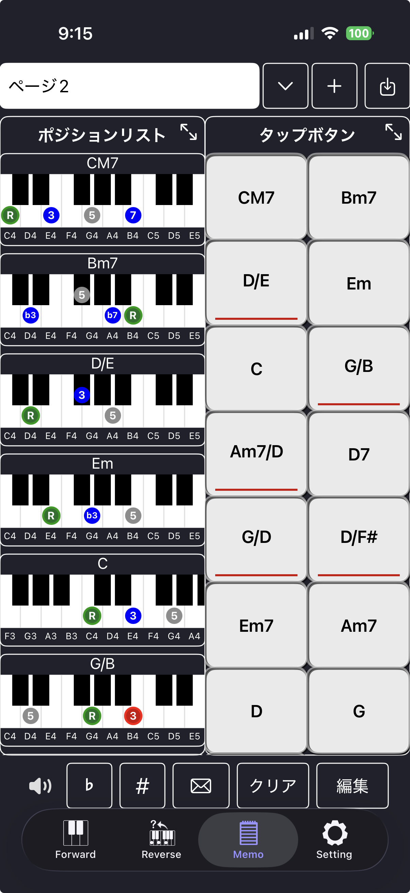

コード譜を貼り付けて、コード進行を自動解析してMemoに取り込む
コード譜インポートは、テキストのコード譜を貼り付けるだけで コード進行を自動解析し、Memoに取り込む機能です。
歌詞や説明文が混じっていても、コードとして認識できる部分を抽出します。
「保存先ページ」で、どのMemoページに取り込むかを選択します。
※ Pro版ではMemoがページ管理され、ページ数も扱いやすくなります。
画面上部の切り替えで、入力方法を選べます。
編集モードでは、コードらしい文字列が見やすいようにハイライトされます。
入力中はキーボードに「完了」ボタンが表示され、すぐ閉じられます。
プレビューモードでは、解析されたコードが見やすく表示されます。
Pro版では、青色で表示されたコード名をタップすると その場で音を確認できます。
※ 非課金版では、プレビュー中のコード名タップによる再生はできません。 （Pro版の案内が表示されます）
画面下部のスライダーで、表示フォントサイズを変更できます。
「同じコードを複数回取り込む」をオンにすると、 同じコードが何回出現しても、そのまま取り込みます。
例：サビで同じ進行が繰り返されるコード譜でも、繰り返し回数を保持できます。
現在の入力テキストから、取り込まれるコード数を自動計算して表示します。
表示例：取り込み件数: 24件
下部のボタンで、入力を素早く操作できます。
「インポート実行」を押すと、解析結果をMemoに取り込みます。
※ インポート実行はPro版のみです。 非課金版ではロック表示になり、押すとPro案内が開きます。
※ ただし、非課金版では「インポート実行」と「プレビューでのタップ再生」はできません。
たとえば、次のようなコード譜を貼り付けます。
CM7 Bm7 D/E Em
頑張らなくてもいいいんだよ
(ピアノのみ)
C G/B Am7/D D7
G/D D/F# Em Em7 C G/B Am7 D
(ミュートアルペジオ)
G D/F# Em Em7 C C/B Am7 D
朝の光が まぶしすぎる日は 布団の中で 少しだけ夢を見よう
G D/F# Em Em7 C G/B Am7 G
昨日の涙も うまく笑えない顔も 誰かと比べなくていいんだよ
プレビューで解析結果を確認し、問題なければ「インポート実行」でMemoに取り込みます。
